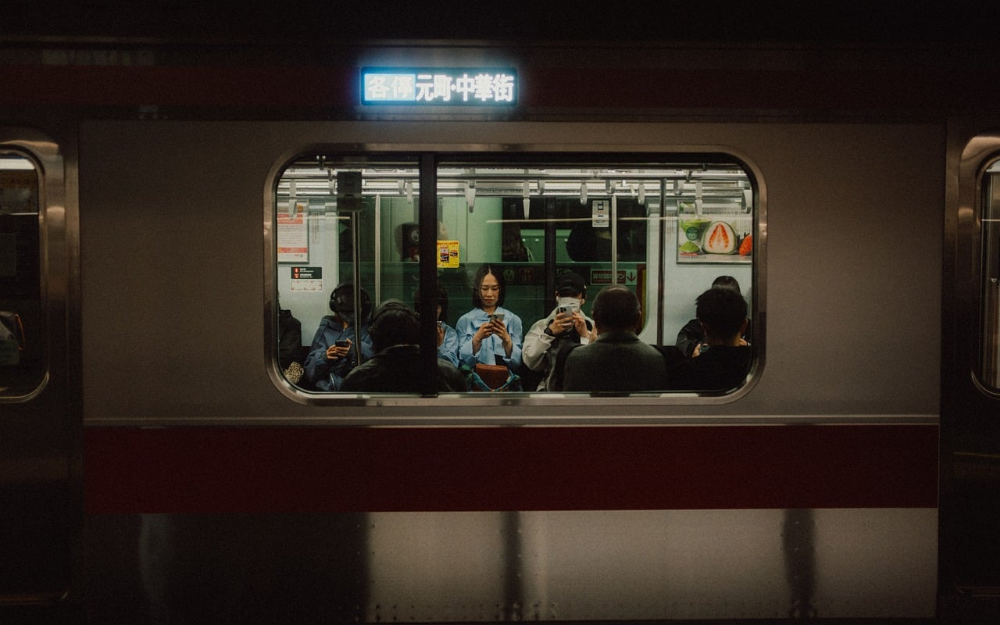
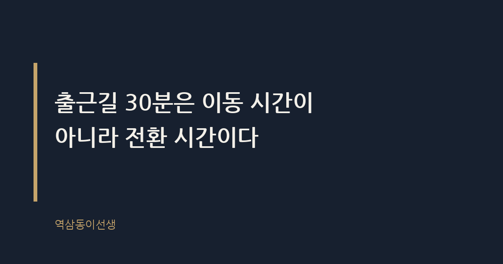
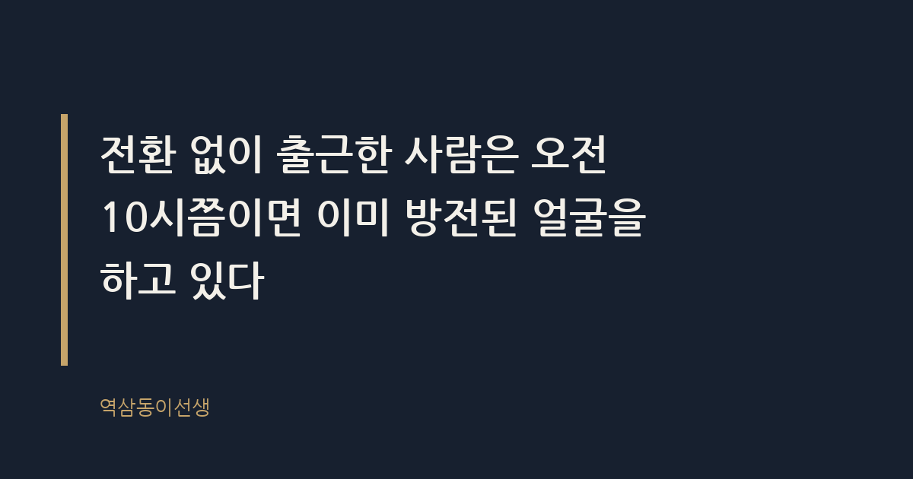

주제 출근길 30분을 바꾸면 하루가 달라지는 이유 (evergreen / office)
제목 후보
메타 설명 출근길 30분을 전환 시간으로 쓰면 오전 업무 집중력이 달라진다. 직접 본 두 부류의 아침과 바로 쓸 수 있는 출근길 루틴 체크리스트.
라벨 출근길, 직장생활, 업무생산성, 아침루틴, 워라밸, 번아웃예방, 출근길30분루틴, 아침전환시간, 출근길스마트폰, 업무집중력높이는법
실용 자산 체크리스트 — 출근길 루틴은 '방법'을 찾는 도구형 검색 의도라 바로 따라 할 수 있는 체크리스트로 제공한다
발행 전 팩트체크
이미지 (Blogger 편집기에 드래그해 넣으세요)



역삼역 2번 출구에서 회사까지는 걸어서 7분이다. 그런데 나는 늘 한 정거장 먼저 내려서 걸어온다. 이유를 물으면 다들 의아해한다. 2호선은 출근 시간에 숨만 쉬어도 땀이 나는 지하철인데, 왜 굳이 더 걷냐고. 하지만 그 한 정거장, 7분 남짓한 시간이 오전 회의의 질을 바꾼다는 걸 알고 나서는 포기할 수가 없었다.
출근길 30분은 이동 시간이 아니라 전환 시간이다. 집에서의 나와 회사에서의 나를 갈아끼우는 완충지대다. 이 30분을 스마트폰 스크롤로 다 써버리느냐, 전환의 틈으로 쓰느냐에 따라 오전 9시부터 오후 6시까지의 체력과 집중력이 갈린다.
출근길 30분이란 물리적으로는 집에서 회사까지 이동하는 시간이지만, 심리적으로는 '집의 나'에서 '회사의 나'로 역할을 바꾸는 전환 구간이다. 아이 등원을 챙기던 사람이 갑자기 팀장 역할로 바뀌어야 하고, 잠옷 바람으로 커피를 내리던 손이 갑자기 보고서 파일을 열어야 한다. 이 역할 전환에는 시간이 필요하다.
조직심리학 쪽에서는 출퇴근 시간을 심리적 완충지대로 쓰는 사람이 업무 만족도와 회복 수준이 높다는 연구 결과가 여러 차례 발표된 것으로 알려져 있다. 완충 없이 바로 역할을 바꾸면 뇌가 과부하를 일으킨다는 설명이다. 거창한 이론까지 몰라도, 출근길에 정신없이 메신저만 보다 도착한 날과 그렇지 않은 날의 오전 컨디션 차이는 누구나 경험으로 알고 있다.
딸 써니를 등원시키고 나오는 아침에는 특히 이 전환이 거칠다. 아이 신발 끈을 묶어주던 손에서 노트북 가방으로, 동화책 읽어주던 말투에서 보고 멘트로 바뀌는 데는 생각보다 긴 숨 고르기가 필요하다. 그 숨 고르기를 생략하면 오전 내내 어딘가 삐걱거리는 느낌으로 보낸다.
작년 가을, 써니가 유치원 현관에서 신발을 안 신겠다고 떼쓰던 날이 있었다. 그날은 전환이고 뭐고 없이 바로 회사에 도착해 9시 회의에 들어갔다. 보고서에 적힌 숫자를 두 번이나 잘못 읽어서 옆자리 팀원이 조용히 고쳐줬다. 그날 이후로는 아무리 바빠도 지하철을 타기 전 커피 한 잔을 사는 루틴만은 지킨다. 숫자를 틀리는 것보다 더 무서운 건, 틀린 줄도 모르고 회의를 계속하는 상태였다.
출근길 30분이 하루 전체 컨디션을 좌우하는 이유는 뇌가 공간을 옮기는 순간 함께 모드도 바꿔야 하기 때문이다. 눈뜨자마자 메신저를 확인하고 그대로 지하철에 올라타면, 뇌는 전환할 틈 없이 바로 업무 모드로 끌려 들어간다. 그러면 정작 회사에 도착해서는 책상에 앉아 한참을 멍하게 보내는 경우가 많다.
그 멍한 시간이 사실은 출근길에서 못 끝낸 전환을 사무실에서 억지로 하고 있는 것이다. 집에서부터 업무 모드로 끌려갔는데 정작 책상 앞에서는 전환이 안 끝난 상태로 멍 때리는 역설. 많이 본 장면이다.
이 역설이 무서운 이유는 티가 잘 안 난다는 데 있다. 겉으로는 자리에 앉아 모니터를 보고 있으니 일하는 중처럼 보인다. 하지만 실제로는 메일함을 열었다 닫았다, 커피를 한 모금 마시고 다시 메신저를 뒤적이는 식으로 20분, 30분이 그냥 흘러간다. 출근길에서 썼어야 할 전환 시간을 회사 시간으로 떠넘긴 것뿐인데, 정작 본인은 그걸 '업무 시간'으로 착각한다.
엘리베이터에서 자주 마주치던 두 얼굴이 있었다. 한 임원은 출근길마다 책 한 챕터를 읽고, 사무실에 도착해서는 가장 먼저 오늘 회의 안건부터 머릿속으로 정리했다. 회의실에 들어올 때 얼굴에 이미 그날의 우선순위가 그려져 있었다.
다른 쪽은 지하철에서부터 팀 단톡방 불이 나 있었다. 자리에 앉자마자 커피부터 들이켜고, 정작 9시 회의에서는 전날 이슈를 되묻곤 했다. 둘 다 같은 시간에 집을 나섰고 같은 거리를 왔는데, 회의실 안에서의 밀도는 완전히 달랐다. 차이는 능력이 아니라 출근길 30분을 어떻게 썼는지였다.
흥미로운 건 두 사람의 업무 역량 자체는 크게 다르지 않았다는 점이다. 둘 다 숫자에 밝았고, 보고서도 깔끔하게 썼다. 하지만 하나는 회의실에 들어오기 전에 이미 머릿속 정리가 끝나 있었고, 다른 하나는 회의가 시작되고 나서야 정리를 시작했다. 그 10분의 격차가 분기 내내 쌓이면, 두 사람에 대한 평판은 전혀 다른 방향으로 굳어진다.
더 재밌는 건 두 사람이 서로의 아침을 전혀 모른다는 점이었다. 책을 읽던 임원은 자기가 뭔가 특별한 걸 한다고 생각하지 않았고, 단톡방을 보던 쪽도 자기가 뒤처진다는 자각이 없었다. 밖에서 지켜보는 사람 눈에만 그 격차가 보였다. 본인은 모르는데 평판은 이미 갈려 있는 상황, 회사에서 가장 흔하면서도 가장 억울한 경우다.
출근길과 퇴근길은 둘 다 30분짜리 이동이지만 성격이 다르다. 퇴근길은 긴장을 풀어주는 감압의 시간이고, 출근길은 긴장을 적정 수준으로 끌어올리는 가압의 시간이다. 퇴근길에 멍하게 있는 건 회복이지만, 출근길에 멍하게 있는 건 다르다. 준비 없이 업무 모드로 끌려가거나, 반대로 아예 각성이 안 된 채 자리에 앉는 결과로 이어진다.
그래서 퇴근길에 쓰던 루틴을 출근길에 그대로 가져다 쓰면 잘 안 맞는 경우가 많다. 퇴근길엔 넷플릭스를 틀어도 괜찮지만, 출근길에 같은 걸 틀면 회사에 도착해서도 한동안 그 세계에서 못 빠져나온다. 출근길에는 오히려 가볍게 각성시키는 자극, 이를테면 짧은 산책이나 책 몇 페이지가 더 잘 맞는다.
1년에 평일 출근을 대략 240일 정도 한다고 치면, 출근길 30분은 1년에 120시간이다. 하루 8시간 근무로 나누면 15일치에 가까운 시간이다. 이동 시간치고는 꽤 묵직한 덩어리다. 그런데 이 시간을 '어쩔 수 없이 버리는 시간'으로만 생각하면, 1년에 15일을 그냥 흘려보내는 셈이 된다.
반대로 이 시간의 절반이라도 전환의 틈으로 쓴다면, 1년에 60시간을 회복과 준비에 쓰는 것과 같다. 어디 가서 따로 시간을 내서 명상 수업을 듣거나 아침 루틴 클래스를 신청하지 않아도, 원래 길 위에서 버리던 시간을 그냥 다르게 쓰는 것만으로 생기는 여유다. 돈 한 푼 안 들이고 만들 수 있는 가장 큰 복지가 사실 출근길에 있다.
이런 얘기를 하면 꼭 나오는 질문이 있다. "비 오는 날은 어떡해요", "늦잠 자서 이미 늦었는데 무슨 전환이에요"라는 반문이다. 맞는 말이다. 매일 똑같은 루틴을 지킬 수 있는 직장인은 많지 않다. 그런 날은 루틴을 다 버리는 대신 딱 한 가지만 챙기면 된다. 엘리베이터를 기다리는 30초든, 커피를 내리는 2분이든 짧게라도 숨을 고르는 틈을 끼워 넣는 것이다.
늦어서 정신없이 뛰어온 날일수록 사무실 문 앞에서 잠깐 멈춰 숨을 한 번 고르고 들어가는 사람과, 숨도 안 고르고 바로 자리에 앉아 노트북부터 여는 사람의 첫 한 시간은 확연히 다르다. 전환은 거창한 의식이 아니라 몇 초짜리 틈이어도 효과가 있다. 중요한 건 길이가 아니라 '있느냐 없느냐'다.
비 오는 날은 오히려 기회가 되기도 한다. 우산을 쓰고 걷는 몇 분은 스마트폰을 볼 수 없는 강제 전환 구간이다. 빗소리에 집중하다 보면 머릿속 잡생각이 자연스럽게 정리된다. 궂은 날씨를 핑계로 전환을 포기하기보다, 그 불편함을 전환의 재료로 바꿔 쓰는 쪽이 결과적으로 덜 지친다.
거창한 각오 없이도 당장 내일부터 써볼 수 있는 순서다. 전부 다 하려 하지 말고 두세 개만 골라도 체감이 다르다.
이들의 공통점은 출근길을 '버리는 시간'으로 여긴다는 것이다. 그래서 최대한 빨리 없애려고 스마트폰으로 메우거나, 반대로 분 단위로 꽉 채워 자기계발 영상을 틀어놓는다. 둘 다 전환이 없다는 점에서는 같다.
전환 없이 출근한 사람은 오전 10시쯤이면 이미 방전된 얼굴을 하고 있다. 아직 보고서 한 줄도 안 썼는데 이미 지쳐 있는 상태, 그게 바로 완충지대 없이 하루를 시작한 결과다. 반대로 출근길에 10분이라도 전환의 틈을 둔 사람은 같은 업무량을 처리하고도 저녁에 덜 지쳐 있다.
신입 시절 사수가 해준 말이 있다. "출근길에 이미 회의 걱정으로 머리가 꽉 차 있으면, 정작 회의실에서는 할 말이 없어진다." 그때는 무슨 말인지 몰랐는데, 연차가 쌓이고 나서야 알았다. 걱정과 준비는 다르다. 걱정은 자리를 차지하기만 하고, 준비는 빈 자리를 만들어 놓는다. 출근길 30분을 걱정으로 채우느냐, 숨 고르기로 비워두느냐의 차이가 바로 거기서 갈린다.
씁쓸하면서도 묘하게 위안이 되는 사실은, 이 30분은 회사가 시키지 않는, 내가 통제할 수 있는 유일한 출퇴근 구간이라는 것이다. 회의 시간도, 상사의 기분도, 오늘의 업무량도 내 뜻대로 안 되지만 출근길 30분을 어떻게 쓸지는 전적으로 나한테 달려 있다.
그래서 나는 여전히 한 정거장 먼저 내린다. 7분을 더 걷는 게 아니라, 집의 나를 내려놓고 회사의 나로 갈아입는 시간을 버는 것이다. 작은 선택인데 하루의 온도가 달라진다.
Q. 출근길에 일부러 아무것도 안 하고 멍 때리는 시간을 둬본 적 있나?